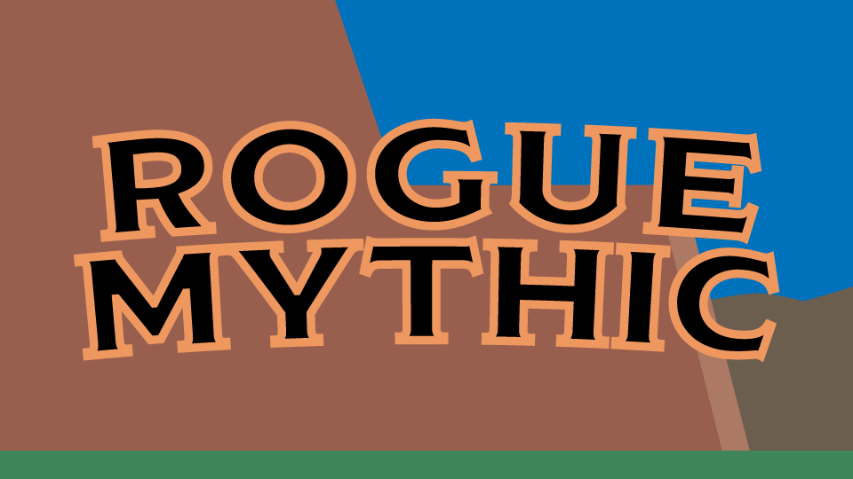
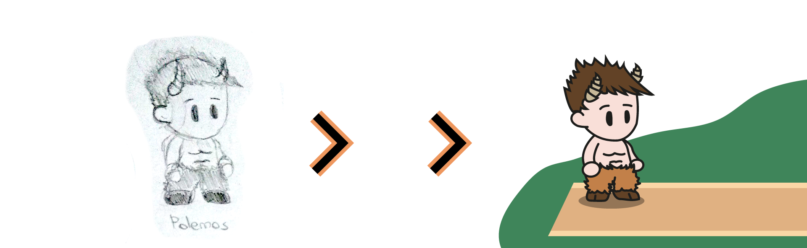
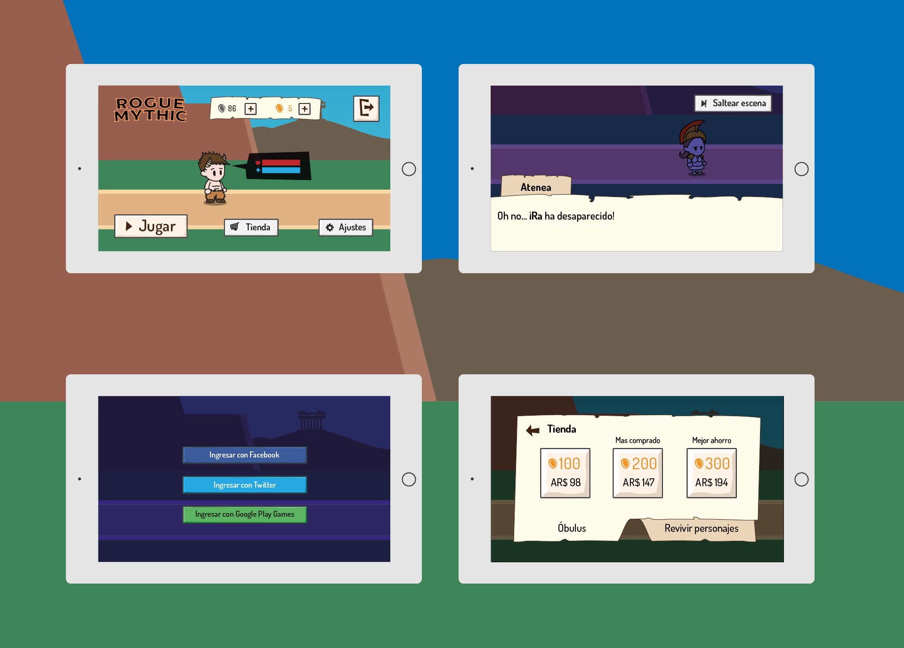

Rogue Mythic
- ClienteTrabajo ficticio
- FechaDiciembre 2018

Rogue Mythic fue un videojuego de aventuras ficticio basado en la edad antigua y los mitos griegos pensado para smartphones y tablets, sobre un fauno mitólogico que debe salvar el destino de los dioses y encontrar aliados en su camino.
Fueron diseñados los personajes principales del prototipo, y se crearon las interfaces para el juego.


Software
- Adobe Illustrator
- Adobe XD